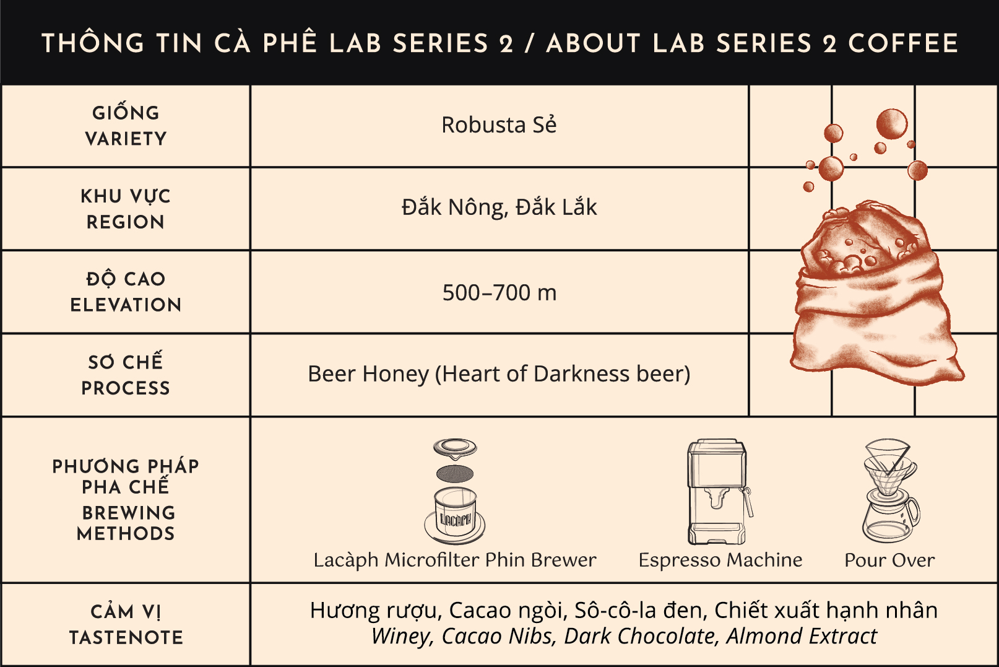
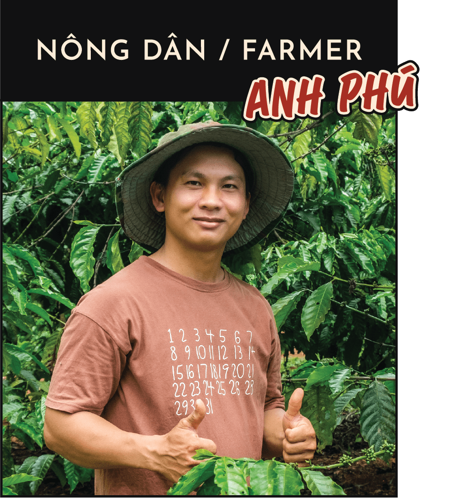
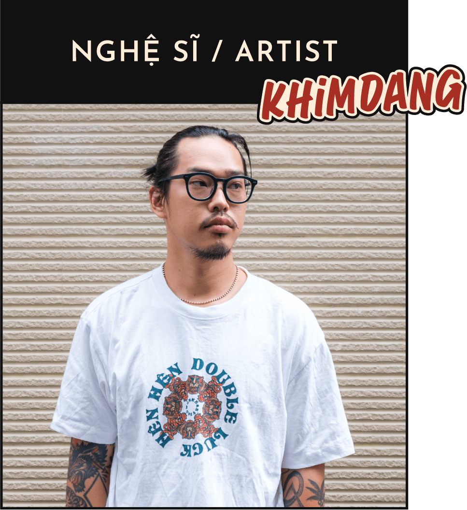
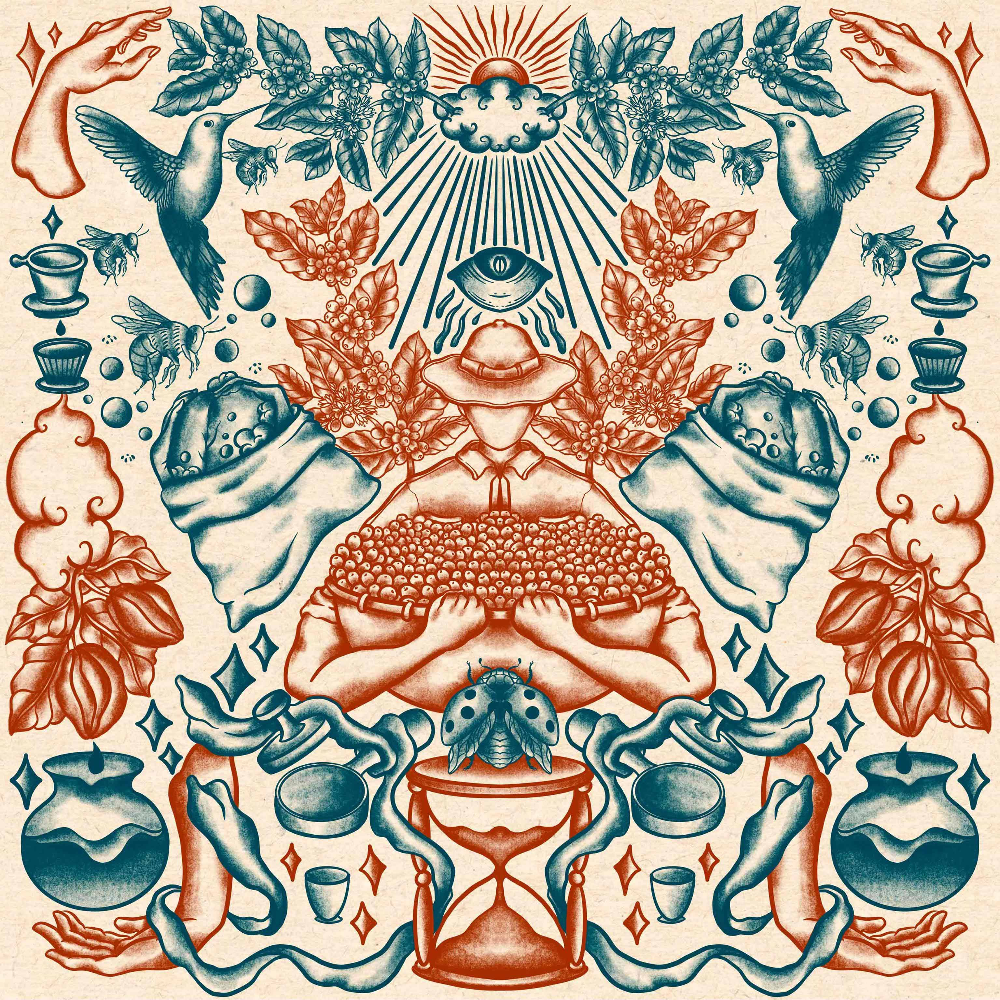
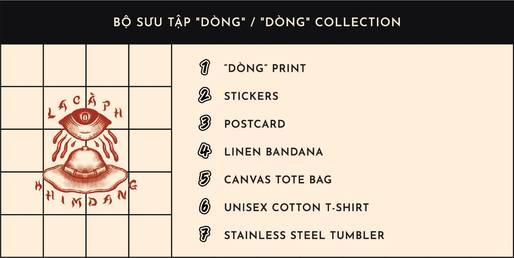

LACÀPH LAB SERIES
LACÀPH LAB SERIES 2
Chuỗi hành trình khám phá Lacàph Lab Series chính thức trở lại với sản phẩm cà phê Robusta Sẻ nguyên trái từ nông trại của Anh Phú lên men với bia Tiramisu Stout của Heart of Darkess.
Chuỗi hành trình khám phá Lacàph Lab Series chính thức trở lại với sản phẩm cà phê Robusta Sẻ nguyên trái từ nông trại của Anh Phú lên men với bia Tiramisu Stout của Heart of Darkess.
Quá trình sơ chế mật ong (honey) với sự tham gia thử nghiệm với bia đã đẩy lên những tầng hương vị phức tạp khó lòng thấy rõ ở những hạt Robusta thông thường. Kết quả từ sự kết hợp độc đáo này là một loại cà phê Robusta có vị chua dễ chịu, vị ngọt như sô-cô-la đen và cacao ngòi Việt Nam cùng hương thơm phảng phất như rượu vang và chiết xuất hạnh nhân.
Với Lacàph Lab Series 2, chúng tôi hợp tác cùng Anh Phú, nơi canh tác những loại Robusta chất lượng và ngon nhất Việt Nam cũng là nông hộ đối tác của chúng tôi từ những ngày đầu thành lập công ty.
Đây cũng là lần đầu tiên Anh Phú thử nghiệm lên men cà phê với bia thủ công. Theo anh, đây là một loại bia có hương vị tốt, với mỗi bao cà phê 50kg anh sẽ dùng 1 lon bia sau đó đổ đầy nước vào, cột chặt miệng bao lại và để cà phê len men tự nhiên trong vòng 48 tiếng.
Sau khi lên men, cà phê được mang đi tách vỏ, giữ lại lớp vỏ thóc và mang đi phơi dưới ánh nắng mặt trời đến khi đạt độ ẩm 12-13%. Quá trình phơi cũng được chia làm 2 giai đoạn. Khoảng hai ngày đầu, Anh Phú trải lớp mỏng cho cà phê khô nhanh để kết thúc hoàn toàn quá trình lên men, sau đó vun thành những lớp dày hơn và tiếp tụ phơi trong vòng 12 ngày. Cà phê sau đó được "nghỉ ngơi" trong kho 4 tháng, đến tháng 5/2022 cũng là lúc cà phê đạt đỉnh hương, Anh Phú đã sàng lọc lại bằng tay một lần nữa và gửi về xưởng rang Lacàph Roastery tại Sài Gòn.
Tuy nhiên, không chỉ dừng lại ở việc thử nghiệm trên hạt cà phê Việt Nam, Lacàph còn mong muốn chia sẻ về văn hoá Việt Nam thông qua nghệ thuật khi lần đầu tiên, chúng tôi kết hợp với nghệ sĩ Khim Đặng trong vai trò nghệ sĩ sáng tác hình ảnh chủ đạo cho bộ sản phẩm Lab Series 2.
Khim Đặng đã có thời gian hơn 11 năm học hành về nghệ thuật trước khi thực hành nghệ thuật. Gọi Khim là một nghệ sĩ chế tác, chỉ đạo nghệ thuật hay đơn giản là một người không ngừng tìm hiểu và sáng tác nghệ thuật đều được.
Nội dung là yếu tố quan trọng làm nên sự khác biệt của người nghệ sĩ, và chất liệu cuộc sống, con người, xã hội,… chính là nguồn cảm hứng bản địa vô tận cho các tác phẩm của Khim. Anh xem mỗi tác phẩm của mình như một phần lưu trữ lại những suy nghĩ và ý tưởng được kết hợp tức thời trong quá trình tạo tác. Cũng vì vậy, mà chuỗi tác phẩm và sản phẩm mang dấu ấn của Khim luôn để lại những cột mốc cảm xúc nhất định cho người thưởng thức.
“Chúng ta có ngôn ngữ riêng, có nền văn hoá đặc thù. Chúng ta làm mọi thứ bằng niềm tự hào dòng máu Việt”. Với Khim, đó chính là lợi thế lớn nhất của nghệ sĩ Việt. Vì vậy, cùng nhau, chúng tôi tôn vinh văn hoá cà phê Việt qua tác phẩm “Dòng” mà Khim sáng tác riêng cho Lacàph Lab Series.
Nói về ý nghĩa của cái tên "Dòng", Khim Đặng chia sẻ ý tưởng về "dòng" trong "dòng chảy", thể hiện sự lặp đi lặp lại theo chu kỳ. Tác phẩm “Dòng” giúp lưu trữ và tái hiện dòng chảy của cả quá trình sản xuất cà phê, từ bước canh tác đến khi có thành phẩm để khách hàng thưởng thức. Bộ sản phẩm cà phê cùng bộ sưu tập Lacàph Lab Series 2 tham gia vào “dòng chảy” này như một nét chấm phá mang lại sự mới mẻ cho một quá trình lặp đi lặp lại đã hình thành từ lâu.
Bên cạnh nhãn sản phẩm cà phê, những biểu tượng của tác phẩm sau đó được chúng tôi ứng dụng thiết kế trong bộ sưu tập bao gồm tranh in khổ lớn, áo thun, bưu thiếp, bình giữ nhiệt, khăn Bandana và các sản phẩm đi kèm khác.
Tất cả các sản phẩm được sản xuất với số lượng giới hạn, riêng tranh khổ lớn "Dòng" kích thước 100x100cm sẽ chỉ sản xuất 5 bản và được kí tên, đánh số trực tiếp bởi nghệ sĩ Khim Đặng.
Khám phá và sở hữu bộ sưu tập với những phát hành giới hạn tại đây.
LACÀPH LAB SERIES
Chuỗi hành trình khám phá Lacàph Lab Series chính thức trở lại với sản phẩm cà phê Robusta Sẻ nguyên trái từ nông trại của Anh Phú lên men với bia Tiramisu Stout của Heart of Darkess.

LACÀPH LAB SERIES
Với dòng sản phẩm đầu tiên thuộc Lacàph Lab Series I, chúng tôi hợp tác với Heart of Darkness Brewery mang đến cho bạn một loại cà phê được lên men với hỗn hợp BiA thủ công all-malt craft lager. Đồng hành cùng sự kết hợp này là Anh Ngọc, người đã nuôi trồng nên những hạt Arabica ngon nhất Việt Nam. Kết quả cho ra một dòng cà phê độc đáo mang hương vị hài hoà và khó phai của vải, mơ và đào.

LACÀPH LAB SERIES
Gia đình của Anh Ngọc đã làm nông nghiệp và trồng cà phê hơn 80 năm. Chúng tôi sử dụng Arabica Bourbon & Cascara của anh để tạo ra Lacàph Espresso Blend và Cold Steeped Cascara.